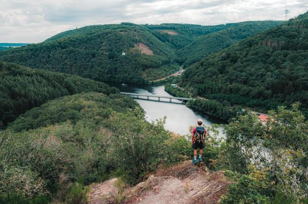

De grote bossen
Rond Saint-Hubert en Anlier
De uitgestrekte wouden van het hart van de Ardennen — herfstkleuren op hun mooist.
Bossen waar je uren loopt zonder een weg te kruisen, uitkijkpunten boven de valleien en paden voor elk tempo — wandelen is wat de Ardennen het best kunnen.
Per gebied
De uitgestrekte wouden van het hart van de Ardennen — herfstkleuren op hun mooist.

Vlonderpaden door een open, bijna noords landschap — elk seizoen een ander gezicht.

Rond Vianden en het Natuurpark Our loopt het massief gewoon door — met kastelen als beloning.
Per profiel

Korte lussen met iets te beleven onderweg — een ezel, een speelbos, een rivier.

Lussen van 15 tot 25 kilometer door de valleien van Ourthe en Semois.

Liever van knooppunt naar knooppunt? Hetzelfde netwerk als voor fietsers bestaat ook voor wandelaars.
Praktisch
Dat hangt van je smaak af: de Hoge Venen voor het open hoogveen, de bossen rond Saint-Hubert voor de stilte, de Semoisvallei voor de uitkijkpunten. Alle drie zijn een dag waard.
Het voor- en najaar zijn de klassiekers — fris, rustig en gekleurd. Maar ook een winterwandeling door berijpte bossen, gevolgd door een warme chocolademelk, heeft zijn eigen publiek.
Juist daar zijn de Ardennen goed in: kies je gebied, loop je route en slaap in een boshut of cabane in de buurt. Zo wordt een wandeling een weekend.